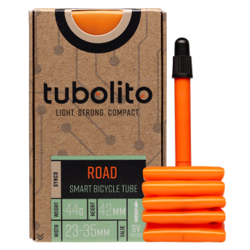

Frequently asked questions
Tubolito SYNCD FAQ
Common questions about using TubeWitch for Tubolito SYNCD on Garmin, including sensor names, pressure targets, alerts, sensor sets and activity recording.

General questions
Which sensors does this version support?
This version is for Tubolito SYNCD Bluetooth LE sensors. For product details, see Tubolito SYNCD.
Which Garmin devices are supported?
Check the TubeWitch for Tubolito SYNCD Garmin Store listing for compatible devices, the latest version and release notes.
Do I need to pair the sensors with Garmin?
No. TubeWitch reads supported Bluetooth LE broadcasts using the full sensor names saved in its settings.
Do I still use the Tubolito app?
Use the Tubolito SYNCD app and instructions for the sensor itself and to check its pressure readings. Assign Front / Rear and set TubeWitch's low and high pressure targets in TubeWitch settings.
Where do I set the pressure limits?
In the active TubeWitch Sensor Set, set Front Low Target / Front High Target and Rear Low Target / Rear High Target in your selected units. A target of 0 is unset and will not trigger that pressure-limit alarm.
Why is it showing a ? or X next to pressure?
"?" indicates that the last received pressure is stale. The current BLE freshness interval is 250 seconds. "X" indicates that the sensor has timed out. The default timeout is 15 minutes during an activity.
Capabilities and behavior
Will it work for more than two sensors?
Save up to five named bikes or wheelsets. Manually select a set, use Auto Switch, or use Touch to Switch on supported touchscreen devices. Only one sensor set is displayed at a time.
Will it record tire pressure to my Garmin activity?
Yes. TubeWitch can record front and rear pressure, average pressure, alarm status, stale-data indicators and sensor-set information. Choose the required Activity Recording options and reboot Garmin after changes.
Can I use just one sensor?
Yes. In the Sensor Set, change Enabled Sensors to Front Only or Rear Only.
Can I customize the display and alerts?
Yes. Configure labels, colors, layout, pressure limits, alarm delays, reset delays and additional alarm repeats. Audible, popup and vibration outputs depend on your Garmin device.
Does the field have to remain visible during a ride?
TubeWitch can continue processing readings and alerts while another data screen is displayed during an activity. Keep the field visible when changing settings in the Connect IQ mobile app.
Setup Questions
What do I enter as the sensor ID?
Enter the full Bluetooth name, such as SYNCD-C3D0, including the prefix and hyphen. The supported PSENS-1734 format is also accepted. Do not enter only the four-character suffix or a Bluetooth address.
How do I assign Front and Rear?
Enter the name of the sensor installed in the front wheel in Front Sensor ID, and the rear sensor in Rear Sensor ID. These settings determine the position in TubeWitch.
What happens if I change PSI, bar or kPa?
The display uses the selected unit, and pressure-target numbers are interpreted in that unit. Saved target numbers are not automatically converted. Update targets in all configured sets after changing units and reboot Garmin as recommended.
Why are my settings not being saved?
 Leave the TubeWitch data field visible on your Garmin device. Save immediately after backing out of a nested Sensor Set. See Settings Not Saving for the complete workarounds.
Leave the TubeWitch data field visible on your Garmin device. Save immediately after backing out of a nested Sensor Set. See Settings Not Saving for the complete workarounds.
General settings-saving tips
Even when Garmin is working normally, the steps below can help if settings do not save reliably.
First, make sure the TubeWitch data field is visible on your Garmin device before changing settings in the Connect IQ mobile app.
If sensor IDs or other settings are not being saved by the Garmin Connect IQ mobile app, try entering one sensor ID first and saving immediately before entering the second. Garmin's save process can be inconsistent when many settings are changed at once.
Use Garmin Express for the most reliable way to save settings.
Support
Where do I get TubeWitch Support?
Use Garmin's in-app Contact Developer link to contact TubeWitch support. Include your Garmin model, TubeWitch version and a description of the issue.

Contact the developer
Use the Garmin Connect IQ mobile app.
Open the listing for TubeWitch for Tubolito SYNCD so your request is associated with the correct app.
- Open the TubeWitch for Tubolito SYNCD Garmin Store page.
- Tap Open in App.
- Scroll to the bottom of the TubeWitch app page, then tap Contact Developer.
Include your email address to receive a reply.
Be sure to monitor your spam folder for replies.